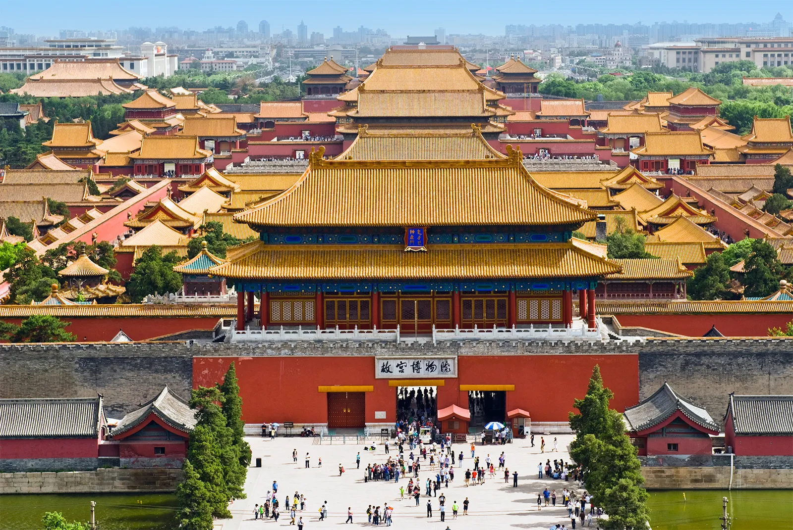
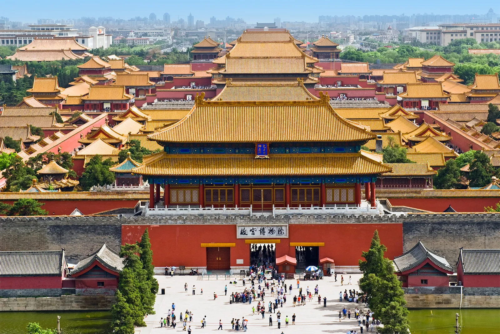

Beijing
Beijing, the capital of China, is a bustling metropolis blending history, culture, and modernity. As one of
the oldest cities in the world, Beijing's rich heritagecan dates back thousands of years, evident in its
iconic landmarks andancient architecture. From the grandeur of the Great Wall to the majestic Forbidden
City, Beijing offers a fascinating glimpse into ancient imperial China.
Beyond its historical treasures, Beijing is fueled by vibrant energy, boasting modern skyscrapers and a
thriving culinary scene. With its blend of tradition and innovation, Beijing fascinates visitors with
captivating contrasts and endless opportunities. It is always ready for exploration. Whether wandering
through hutongs or marveling at skyscrapers, a visit toBeijing promises an unforgettable experience filled
with intrigue and wonder.
 

History
Beijing's history is as rich and complex as China itself, spanning over three millennia. Originally known as
Ji, the area that encompasses modern-day Beijing has been inhabited since the prehistoric era. The city's
strategic location at the northern tip of the North China Plain made it a significant center for trade and
governance.
One of the most significant periods in Beijing's history came during the Ming Dynasty (1368-1644), when
Emperor Yongle established it as the capital of the empire and began construction of the Forbidden City, the
iconic imperial palace complex that remains a symbol of Chinese civilization today.
In the 20th century, Beijing played a central role in China's modern history. It was the birthplace of the
May Fourth Movement in 1919, a cultural and intellectual movement that advocated for modernization and
reform. Following the establishment of the People's Republic of China in 1949, Beijing became the political
and cultural center of the nation once again, with landmarks such as Tiananmen Square and the Great Hall of
the People symbolizing the new government's authority.
In recent decades, Beijing has experienced rapid economic growth and urbanization, transforming into a
bustling metropolis with modern infrastructure and a thriving economy. However, amidst the modern
skyscrapers and bustling streets, traces of Beijing's ancient history and cultural heritage continue to
endure, making it a fascinating destination for visitors from around the world.